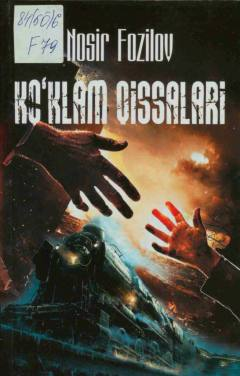

KQNosir Fozilovning hayotiy voqealarga boy qissalari to'plami.
Mazkur kitob taniqli yozuvchi Nosir Fozilovning sara qissalarini o'z ichiga oladi. Asarlarda insoniy munosabatlar, hayotiy qiyinchiliklar va milliy qadriyatlar badiiy talqin etilgan. Kitob keng kitobxonlar omjasiga mo'ljallangan.